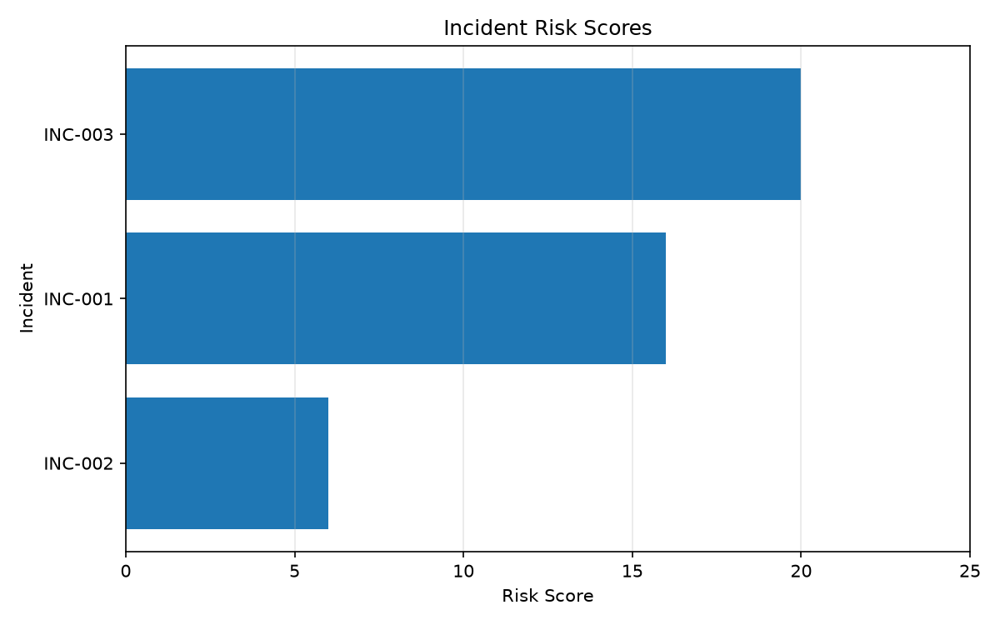
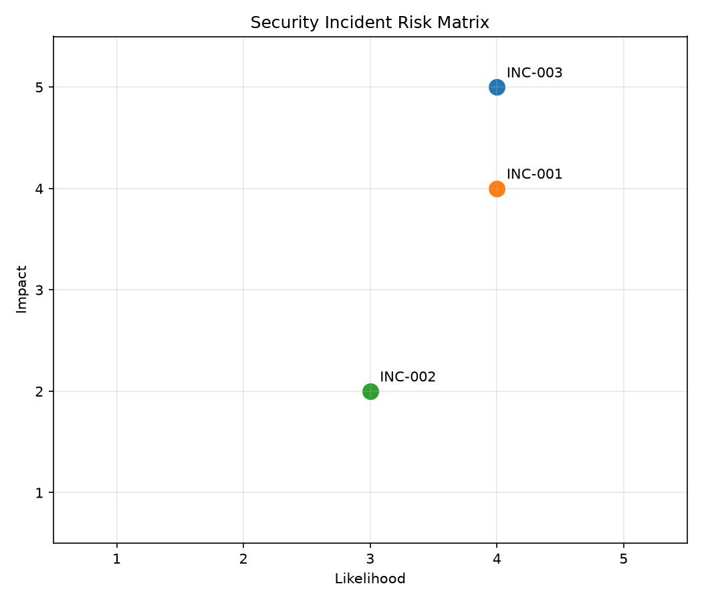

Analysis of simulated security logs using rule-based incident detection, incident investigation and qualitative cybersecurity risk assessment.
Analysis of the simulated security logs identified 3 security incidents from 732 events. 2 incidents were assessed as Critical risk. The remaining incident was assessed as Medium risk.
The highest-priority finding involved suspicious activity affecting the privileged admin01 account. A separate brute-force attack showed repeated failed authentication attempts followed by a successful login. Network reconnaissance was also detected through rapid probing of multiple destination ports.
The analysis demonstrates an end-to-end cybersecurity workflow covering security log analysis, incident detection, investigation, risk assessment and mitigation recommendations.
The project uses simulated authentication and network security logs representing normal activity and deliberately injected suspicious behaviour.
Deterministic detection rules identify three incident types: brute-force authentication, suspicious account activity and network port scanning.
Detected incidents are investigated using surrounding log activity and user activity baselines. Each incident is then assessed using a qualitative 5 x 5 risk matrix.
Risk score = Likelihood x Impact
Scores of 1-4 are classified as Low, 5-9 as Medium, 10-14 as High and 15-25 as Critical.
The table below summarises the incidents identified during the analysis and their resulting risk assessments.
| ID | Incident Type | Risk Score | Risk Level |
|---|---|---|---|
| INC-003 | Suspicious account activity | 20 | Critical |
| INC-001 | Brute-force authentication | 16 | Critical |
| INC-002 | Network port scanning | 6 | Medium |
Each detected incident was investigated using the available log evidence and contextual information. The findings below describe what the activity indicates and its potential security implications.
Finding: A successful authentication for admin01 was observed from 203.0.113.10 at 11:17 from Germany rather than the user's usual UK location.
Security implication: The authentication differs from the user's established baseline and may indicate compromised credentials or legitimate activity that requires verification.
Risk assessment: Likelihood 4/5 × Impact 5/5 = 20/25 (Critical).
Finding: 14 failed authentication attempts were followed by a successful login for jsmith from 203.0.113.42.
Security implication: The successful authentication following repeated failures provides evidence of a possible account compromise and requires further investigation.
Risk assessment: Likelihood 4/5 × Impact 4/5 = 16/25 (Critical).
Finding: Source 198.51.100.20 rapidly attempted connections to 13 distinct ports on a single destination host. No successful connections were observed.
Security implication: The concentrated probing activity is consistent with network reconnaissance. An attacker could use this information to identify exposed services for subsequent targeting.
Risk assessment: Likelihood 3/5 × Impact 2/5 = 6/25 (Medium).
Incidents were prioritised using their calculated risk scores. The suspicious privileged-account activity represents the highest-priority finding because compromise of a privileged account could have severe consequences. The brute-force incident is also Critical because repeated failed logins were followed by a successful authentication. The port scan is lower priority because no successful connections were observed.


Mitigations are prioritised according to the assessed risk associated with each incident. Higher-risk incidents receive greater priority for remediation.
| Priority | Incident | Type | Recommended mitigation |
|---|---|---|---|
| 1 | INC-003 | Suspicious account activity | Require MFA for privileged accounts, verify the login with the account owner, review activity performed after authentication, restrict privileged access and monitor privileged account activity. |
| 2 | INC-001 | Brute-force authentication | Enable MFA, implement rate limiting or account lockout controls, monitor repeated authentication failures and review the affected account for unauthorised activity. |
| 3 | INC-002 | Network port scanning | Restrict unnecessary exposed services, apply firewall rules to limit network access, monitor repeated scanning activity and investigate whether the source was authorised. |